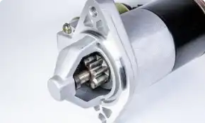
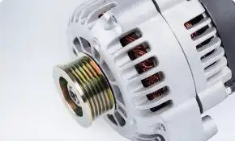
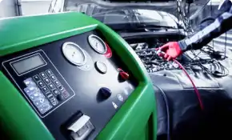
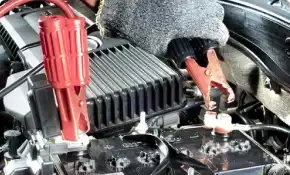

Мережа СЦТ Restart (Рестарт) надає наступні послуги
-
 Стартери
Діагностика, ремонт,
заміна, продаж. Усі послугиПідібрати стартер, деталі стартера
можна в інтернет-магазині -
 Генератори
Діагностика, ремонт,
заміна, продаж. Усі послугиПідібрати генератор, деталі генератора
можна в інтернет-магазині -
 Кондиціонери
Діагностика, ремонт,
заправка, дозаправка. Усі послугиПідібрати запчастини до системи
кондиціонування можна в інтернет-магазині -
 Акумулятори
Діагностика,
заряд та продаж.
Сьогодні в Компанії є 7 діючих сервісно-технічних центрів
-
Підкови, 17з 098 706 93 93
Ремонт та заправка кондиціонерів
Як проїхати -
Київська, 98г | 067 707 07 59
Діагностика та заправка кондиціонерів
Як проїхати -
Соборна, 446В | 067 380 22 23
Діагностика та заправка кондиціонерів
Як проїхати -
Радивилів, вул. Почаївська, 3н | 096 668 11 55
Як проїхати
-
Кравчука, 44 | 067 800 76 22
Як проїхати -
Гонгадзе, 5 | 067 707 07 79
Діагностика та заправка кондиціонерів
Як проїхати -
Соборна, 446В | 067 380 22 23
Діагностика та заправка кондиціонерів
Як проїхати -
Об’їзна, Рованці, Технічна, 1 | 097 645 4433
Діагностика та заправка кондиціонерів
Як проїхати